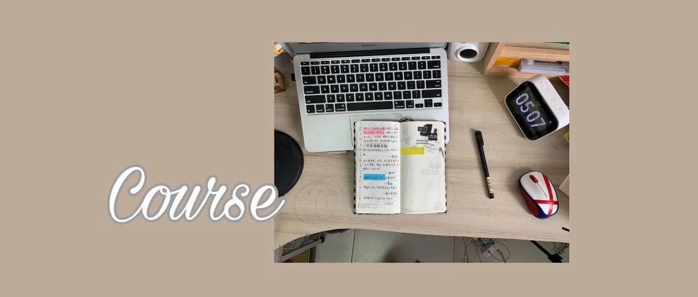

5个作图app，帮你赚到第一桶金
点击关注 秋秋很开心

图：@网络
文：@秋秋
这个年代，如果不会p图，就像不会用word打字一样。
但是有些软件不仅能美颜p图，作图（设计）也是一把好手。
今天就来介绍5款app，带你成功进击博主第一步。

1.穿搭博主
没有穿搭博主的美貌和身材，但是这种穿搭图也很好看不是？关键一个app就能搞定。


<< 滑动查看下一张图片 >>
滑动看我做的穿搭分享🙈
这个app就是picsart。
其实它最强大的功能就是抠图和贴纸，你看到的如果是各种组合的图，它都能做！


像小某书这种日更穿搭图的博主，粉丝都可以过万。
所以学会这个app很值得啊！
超简单教程
使用步骤：
先在某宝找到一些好看的服装图片。app导入，调整图片大小。

2. 继续添加其他图片。

3. 最后加上一下边框和字。

除了可以p简单的穿搭，这种带人的也是一样。只是先放入人物再放衣服就可以了。

2.美妆博主
美妆博主也看颜值，但是局部试色总不难吧！这个app，你值得拥有。

超简单教程
拿我的嘴巴做个示范。
手机或者相机自拍，嘴巴导入snapseed，他的下面会有很多按钮。

点击局部，首先调节结构和亮度。目的是让嘴巴周围看起来干净，并且白一点。
其他参数点击上下，可以调出亮度、对比度和饱和度等。左右滑动可以调整数值。

另外，B612现在也推出了可以直接试色的模板，嘴巴靠近就可以拍出来。

3.手帐博主
许多博主都会更新手帐或者日程，但是无疑你会发现他们也都有统一的风格。
要么粉色系少女、要不颗粒复古。


所以想进军这一行，先学会用vsco，对照片进行统一处理。
超简单教程

这个app里面有很多的滤镜，还可以调整各种参数。
比如锐度、白平衡、曲线，会很有ins风。然后滤镜的话c系列的比较偏美食，E系列的偏海洋色系。
这里给大家两个我常用的参数，调出来之后是这个样子。


我一般不会加滤镜，但是会调节色调和色温，再调的亮一点🕐。
4.旅行博主
旅行博主主要是长图文。
很多小伙伴问我的微博上这种长图文怎么做的，其实我都是用公众号截图。
但是用这几个app也可以做出来。


记得滑动查看🙈
超简单教程
这个教程应该不用出，知道app就会做的那种。
所以我就不多说了，就是这两个app👇


mori手帐，可以调整背景，有网格、点线，还有许多好看的贴纸。
字体也相对较多，我写的很多旅行的都是用这个做的。

另一个就是zine。比较简洁，适合文字多比较条理的博主使用。书生气十足！

但是zine好像图片有限制，开通会员才可以无限使用。
所以虽然app可以很大程度替代ps，但是还是会有局限........
最后的碎碎念
最后，随着4g，5g的发展，越来越多的人可以不用出去上班，做自由职业来养活自己。
但是无论怎样，你都要有一个拿出手的技能，所以做图也是很重要的！
就希望这篇教程能帮助大家～哪怕一点点。
ps：好久没跟大家分享东西了，更新不太快，但希望每一篇都是精品。

一 个 学 东 西 的 公 众 号
HAVE A NICE DAY
☕️
♦️ 你 喜 欢 的 ♦️

合 作 联 系：cinleung@163.com